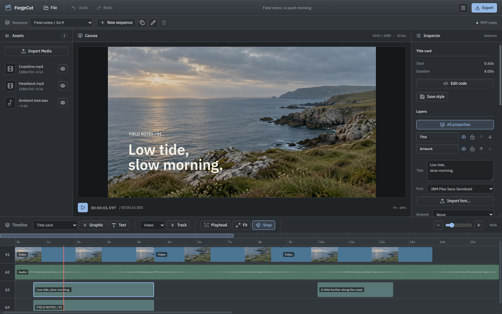
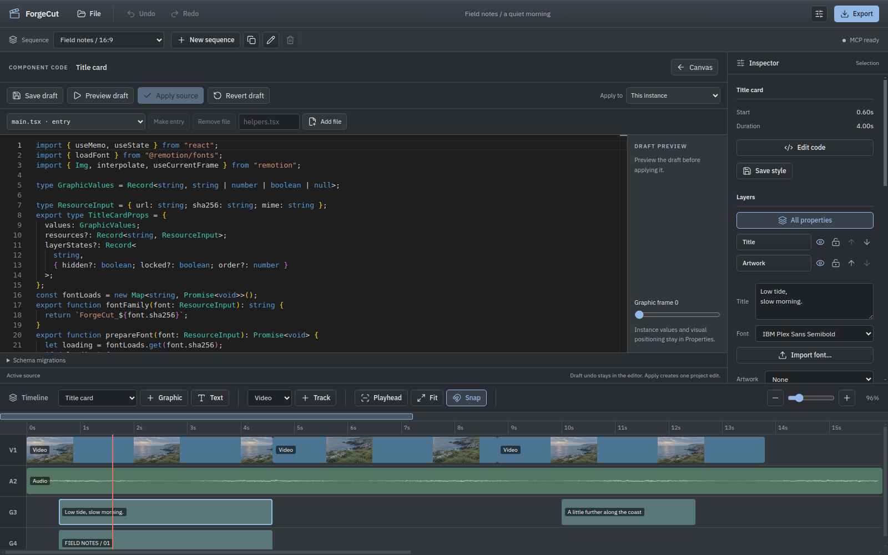

Find the moments.
Save source ranges with notes. Review contact sheets, waveforms and short previews, then trim, split and arrange your footage on the timeline.
Desktop video editing / Linux-first
Cut the footage. Place the music. Make the titles feel right.
ForgeCut brings a timeline, visual controls and editable Remotion graphics into one workspace. An MCP bridge lets your agent work alongside you.
Downloads
The everyday edit
Save source ranges with notes. Review contact sheets, waveforms and short previews, then trim, split and arrange your footage on the timeline.
Change text, fonts, artwork, colour and placement. Move and resize graphic layers on the canvas, or save a style to use again.
Keep landscape and portrait sequences in one project. Export a short review, queue MP4 or WebM outputs, and collect the project with its media.
MCP / A shared project
Talk to Codex or another MCP client while ForgeCut stays open. Ask for a cut, then refine it yourself. The agent can read the current project and continue from your changes.
Connect your MCP clientInside the editor
Use the Inspector for everyday changes. Open the Remotion source in the bundled Monaco workspace when an animation needs more than a control. Preview a draft before applying it.

The project comes with you
Reopen your project without an agent. Collect the source code, artwork, fonts and selected media into a portable folder. Keep larger recordings external when you prefer, with relinking when their location changes.
Desktop installers / v1.0.1
Choose the build for your machine. These are the published v1.0.1 installers; the screenshots show the current development workspace. These older releases do not include the new MCP and graphics workflow.
64-bit desktop
Download AppImage64-bit installer
Download for WindowsApple silicon or Intel
Download for Apple siliconFFmpeg must be installed and available on PATH. Native Remotion graphics rendering currently requires Linux. Release notes · Requirements